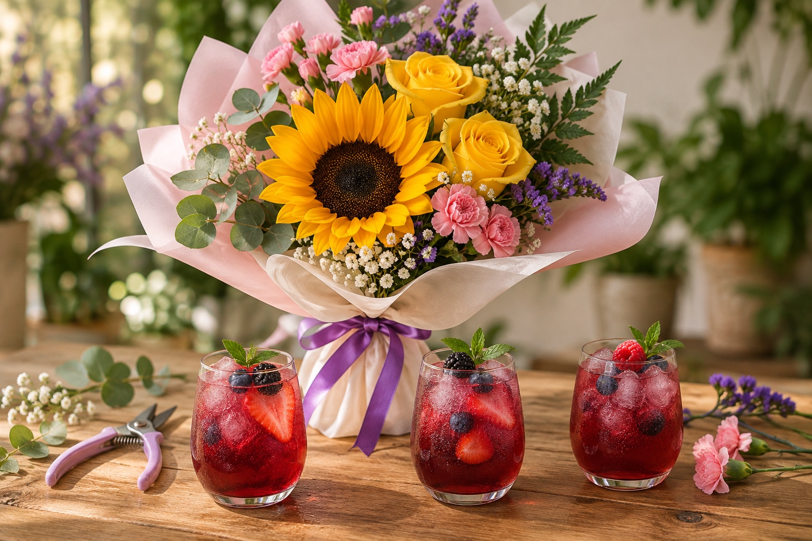

Intelligence
AI & SI, agents and the ideas changing how we work.
A publication for women shaping what comes next. Technology, design and business through a creative lens.
Inside Blendstory ↓THE FIRST CHAPTER / BLENDSTORYThe creative practice behind the publication. Digital presence and intelligent workflows for women-led businesses.
Meet the team ↗Identity, websites and digital expression.
Defined workflows, integration and maintenance with human oversight.
Concepts, shareable pages and artwork for social media.
Trends translated into useful directions for your business.

Fresh flowers, drinks by BerryWildHN and a Thursday with room for a new experience. Discover Flower Party at The Garden by Cesiah Paola.
Open the invitation ↗Human leadership, design and creative intelligence. Meet the people and DAEs shaping Blendstory.
Lilith and Sophie are Digital Autonomous Entities from Lempyra R&D LLC. Human leadership directs and approves their work.
Following technology means asking what it changes: in the work we do, the businesses we build and the lives we choose.
AI & SI, agents and the ideas changing how we work.
Identity, expression and the experiences that make a mark.
Women building, experimenting and making their own decisions.
The first articles are in preparation. New features and essays will appear here.